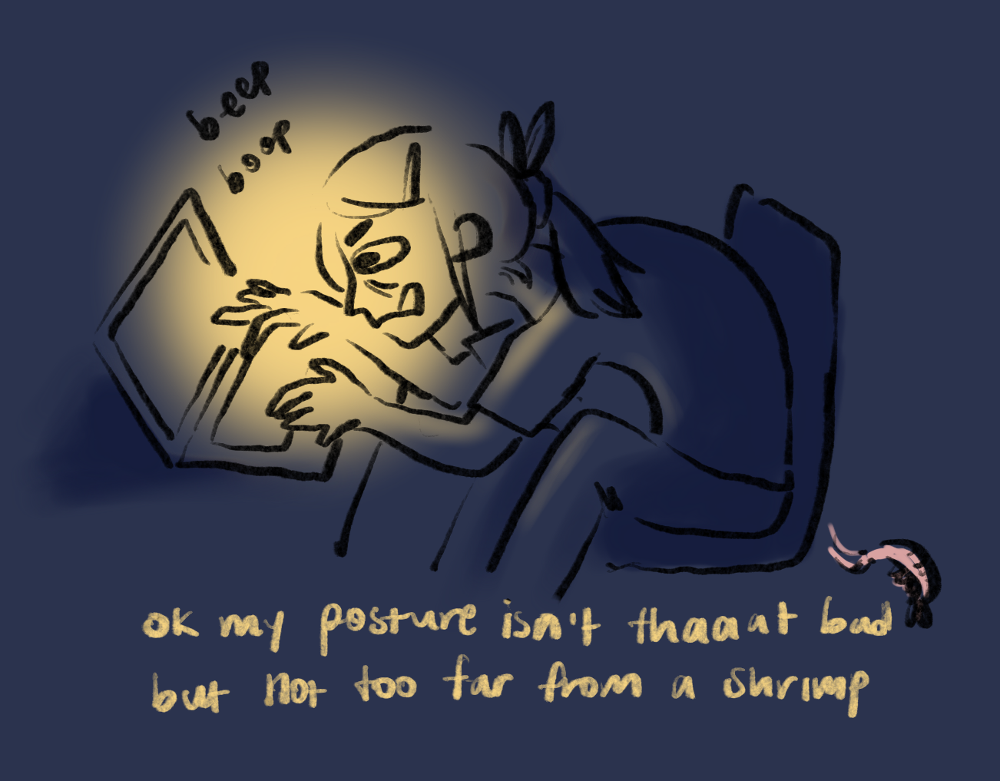

I’m not incredibly busy right now (courses/clubs have yet to really pick up), so I’ll take the time to reflect on things I learned from my first week of zoom MIT.
1. “Apply like a man”
According to a Hewlett Packard report, men apply to positions when they meet only 60% of the qualifications, whereas women apply when they meet all 100%. When I was looking for UROP (undergraduate research) opportunities, many times I’d get excited about a potential project until I got down to the prerequisites/skills for the ideal candidate. To be frank, I am quite the underqualified frosh.
When we were catching up on zoom, I told my high school teacher about this, to which she replied “Apply like a man!” Another version of this I’ve been told is “f*ck it bro” (it as in the prereqs and probably also self imposed barriers against applying). Interestingly, I was turned down from projects for which I met most/all of the prereqs. On the other hand, someone (really cool) ended up taking me in as a UROP despite meeting only 2 out of 5 prereqs. Beat that, Hewlett Packard men. I have some catching up to do, but I’m so excited to start!
2. Ask those “dumb” questions
Yikes, 6.006 (intro algorithms) is hard. During lecture, there would be so many people who answered the prof’s questions almost instantly, while I’d have no idea what’s going on. (Is strong induction just induction but more buff??) During recitation today, I understood maybe 10% of what happened. I hesitantly unmuted myself to ask a couple questions. Then someone zoom dm’ed me “girlll I support your questions!!” BLESS their kind soul. That totally made my day. ♥
3. Zoom fatigue is too real and naps are simply incredible
I’m still figuring out how to make 12+ hours of screen time a day more sustainable, but I’m feeling better about it now than I did a couple days ago. For one thing, making my laptop screen emit more orange light makes my eyes burn a little less. More importantly, NAPS. On the first day, I had 4 hours of lecture with one 30 min break, which I stupidly spent on social media. I crashed afterwards and screens sent needles through my eyes for the rest of the day. Yesterday, I had 8 hours of lecture and meetings with two 30 min breaks, both of which I spent napping. That made a world of a difference, and I actually wasn’t too tired afterwards. I shall now worship naps with all of my heart.

Although not being on campus sucks, I’m optimistic that good things can still come from this semester! There are way too many cool things going on as upperclassmen eagerly recruit frosh for clubs and communities. I may be overcommitting myself, but I’ll figure it out later :).